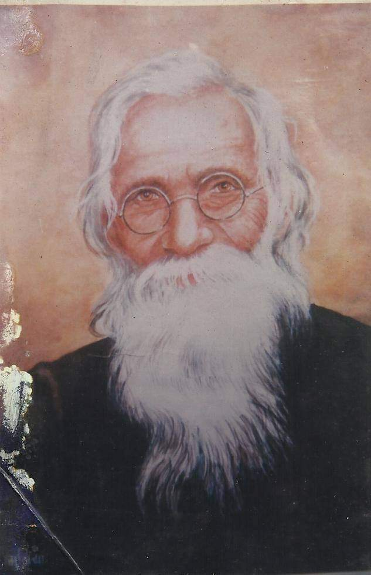

 Lekhnath Paudyal:The first modern Nepali poet Lekhnath Paudyal (Nepali: लेखनाथ पौडेल; 1885 AD - 1966 AD) regarded as the founding father of modern Nepali poetry literature (Kabi Shiromani) in twentieth-century. His most important contribution is believed to enrichment and refinement of its language rather than to its philosophical breadth. The best of Lekhnath's poems adhered to the old-fashioned conventions of Sanskrit poetics (kavya ). Lekhnath, the first modern Nepali poet, wrote most valuable classical style of Nepali Poems. His poems are very much popular until today which often mentioned contemporary social and political issues as well. It is believed there were the first glimmerings of the poetic spirit that was to come after him. Lekhnath was born into a Brahman family in Arghaun-Archale which lies at present Ward No 6, Lekhnath Municipality, Western Part of Nepal in 1885. He received his first lessons from his father then he was sent to the capital, Kathmandu to attend a Sanskrit school. He has gone to holy city of Banaras to continue his higher education. During his stay in India, his young wife died and he been penniless. During the time he met with little academic success and he spent the next few years of his life seeking work in India. In 1909 he returned to Kathmandu, where he entered the employ of Bhim Shamsher, an important member of the ruling Rana family, as priest and tutor. He retained this post for twenty-five years. His most popular poem was "A Parrot in a Cage" (Pinjarako Suga) which indirectly shatters the contemporary cruel Rana Regime in Nepal. Most of Lekhnath Paudyal's shorter poems are collected in Lalitya (Delicacy), published in two volumes in 1967 and 1968. His longer works —khanda-kavya and mahakavya —are (with dates of first publication) Ritu Vichara (Contemplation of the Seasons, 1916), Buddhi Vinoda (Enjoyments of Wisdom, 1916), Satya-Kali-Samvada (A Dialogue Between the Degenerate Age and the Age of Truth, 1919), Amar Jyotiko Satya-Smriti (Remembering the Truth of Undying Light, 1951), Taruna Tapasi (The Young Ascetic, 1953), and Mero Rama (My God, 1954). Another epic poem, entitled Ganga-Gauri (Goddess of the Ganges).